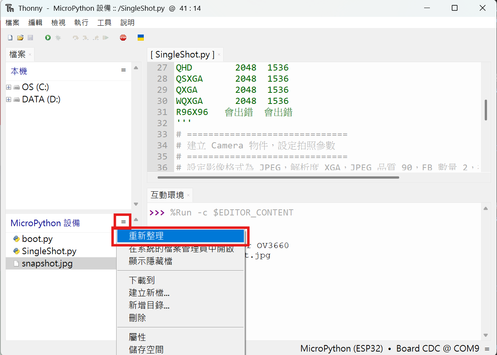

正面圖

圖片來源：
Seeed Studio 官方文件
腳位圖
.jpg)
圖片來源：
Seeed Studio 官方文件
在開始撰寫程式之前，先來認識這塊開發板上的 B2B-Connector。
SingleShot.py
# 韌體下載https://github.com/cnadler86/micropython-camera-API/releases
# 務必下載v0.6.0 (mpy 1.27.x)的mpy_cam-v1.27.0-XIAO_ESP32S3.zip ，不要用最新版
from camera import Camera, GrabMode, PixelFormat, FrameSize, GainCeiling
'''
FrameSize 長 寬 品質
R128x128 128 128 偏綠
QQVGA 160 120 偏綠
HQVGA 240 176 偏綠
R240X240 240 240 偏綠
QVGA 320 240
R320X320 320 320 偏綠
CIF 400 296
HVGA 480 320
VGA 640 480 偏綠
P_HD 720 1280
QCIF 720 1280
SVGA 800 600 偏綠
P_3MP 864 1536
XGA 1024 768 偏綠
HD 1280 720
SXGA 1280 1024
UXGA 1600 1200
FHD 1920 1080
P_FHD 2048 1536
QHD 2048 1536
QSXGA 2048 1536
QXGA 2048 1536
WQXGA 2048 1536
R96X96 會出錯 會出錯
'''
# ==============================
# 建立 Camera 物件，設定拍照參數
# ==============================
# 設定影像格式為 JPEG，解析度 XGA，JPEG 品質 90，FB 數量 2，抓取模式為 WHEN_EMPTY
cam = Camera(
pixel_format=PixelFormat.JPEG, # JPEG 格式
frame_size=FrameSize.WQXGA, # 解析度 WQXGA (2048X1536)
jpeg_quality=90, # JPEG 壓縮品質
fb_count=1, # frame buffer 數量
grab_mode=GrabMode.WHEN_EMPTY # 抓取模式，當 buffer 空時才抓
)
# ==============================
# 初始化攝影機
# ==============================
cam.init() # 啟動攝影機硬體
# ==============================
# 印出 Camera 物件資訊（方便 debug）
# ==============================
print(cam) # 顯示 Camera 物件資訊
# ==============================
# 拍一張照片
# ==============================
img = cam.capture() # 擷取影像，回傳 memoryview 物件
# ==============================
# 將拍到的影像存成 JPEG 檔
# ==============================
with open("snapshot.jpg", "wb") as f: # 以寫入二進位方式開啟檔案
f.write(img) # 將 memoryview 寫入檔案
# ==============================
# 提示使用者已成功存檔
# ==============================
print("影像已存成 snapshot.jpg") # 印出提示訊息
# ==============================
# 釋放影像記憶體
# ==============================
cam.free_buffer() # 釋放剛剛抓到的影像 memoryview，以免佔用 RAM
